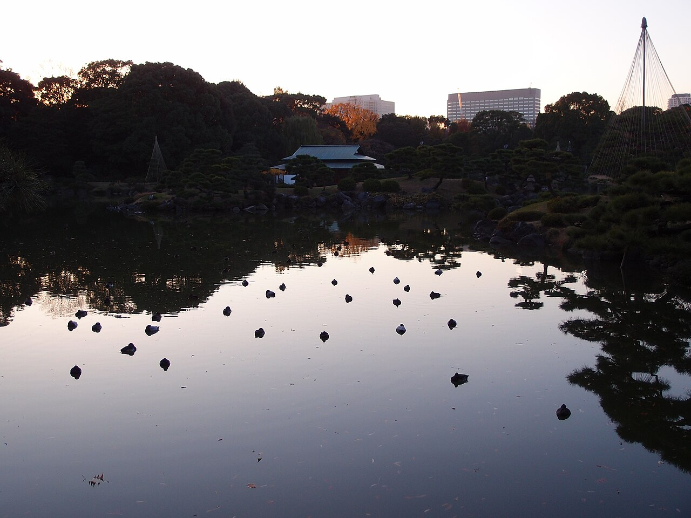
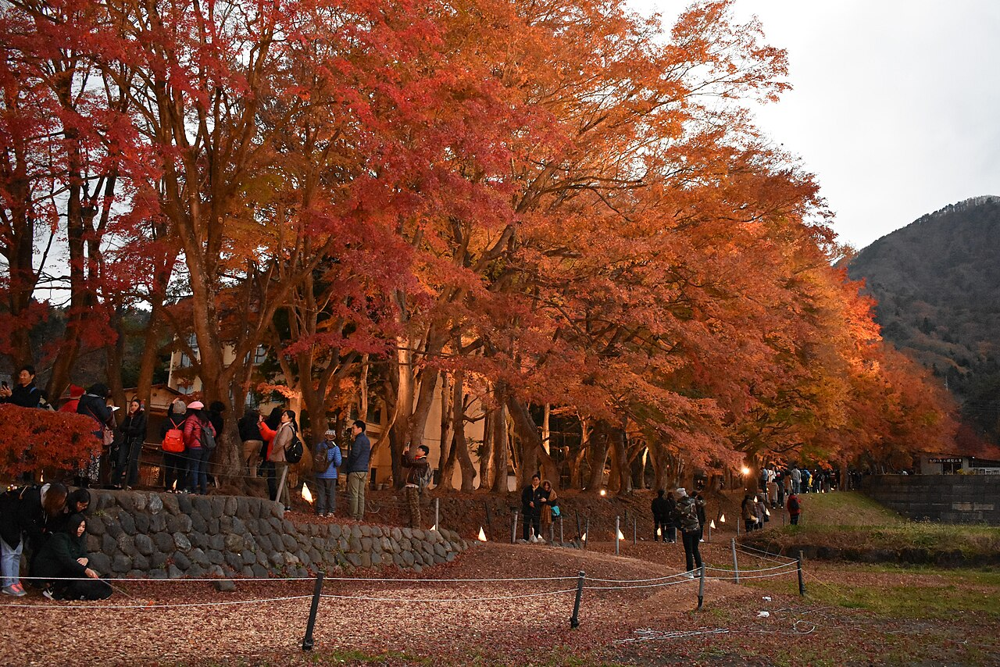
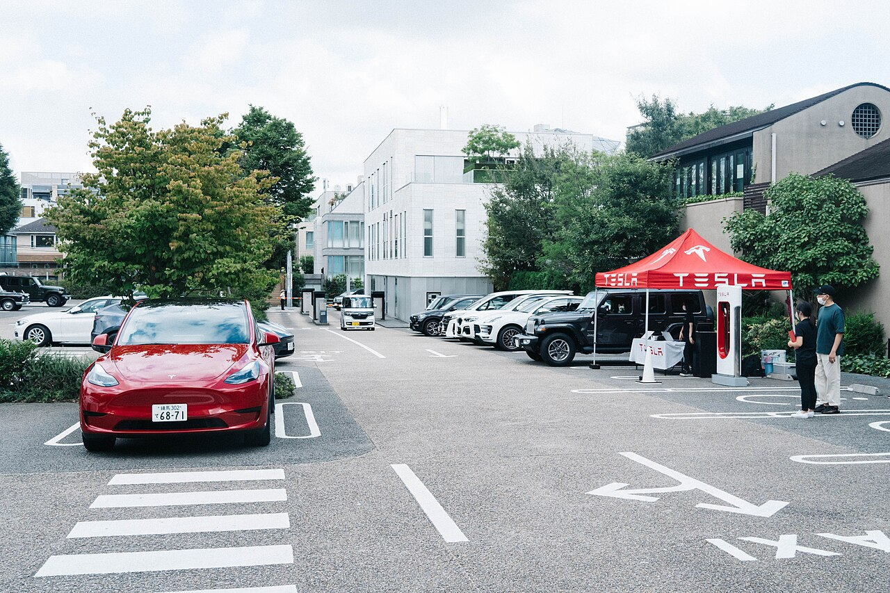
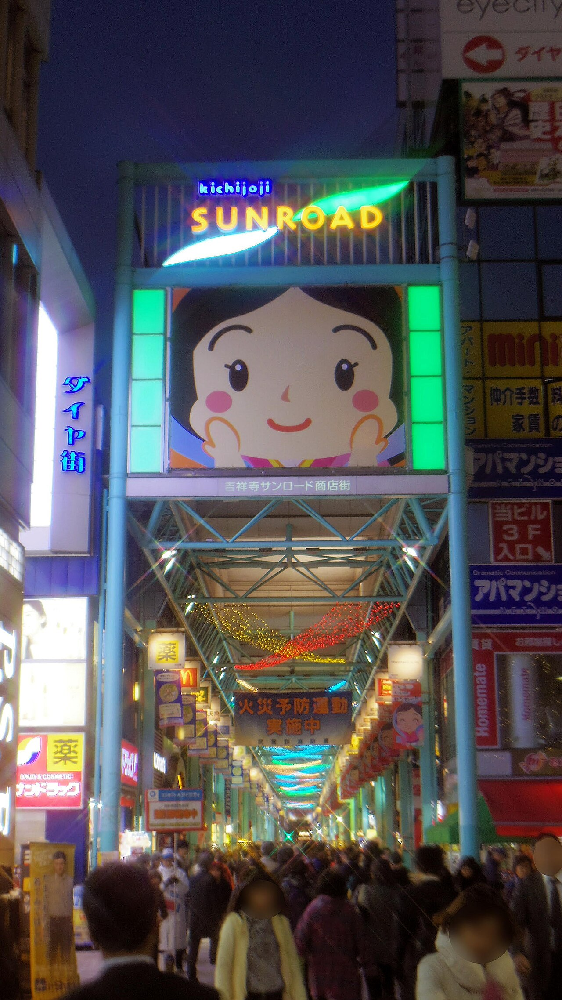
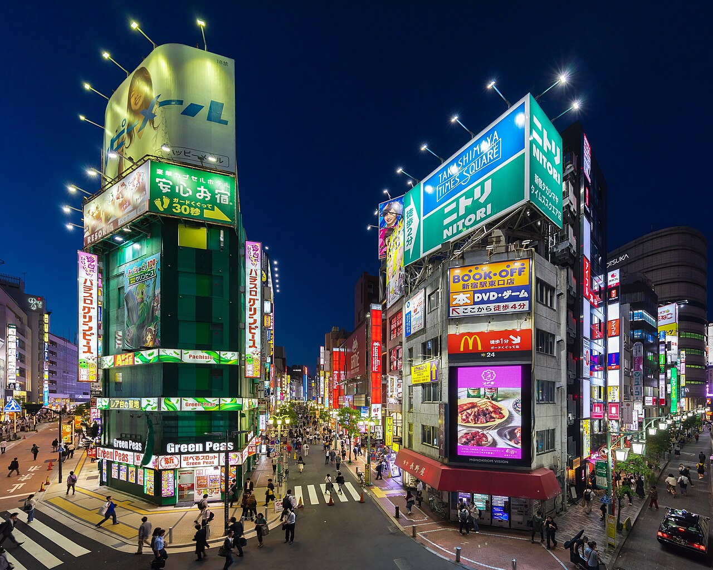
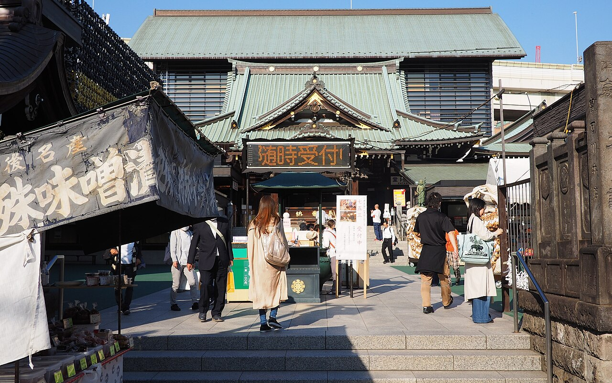
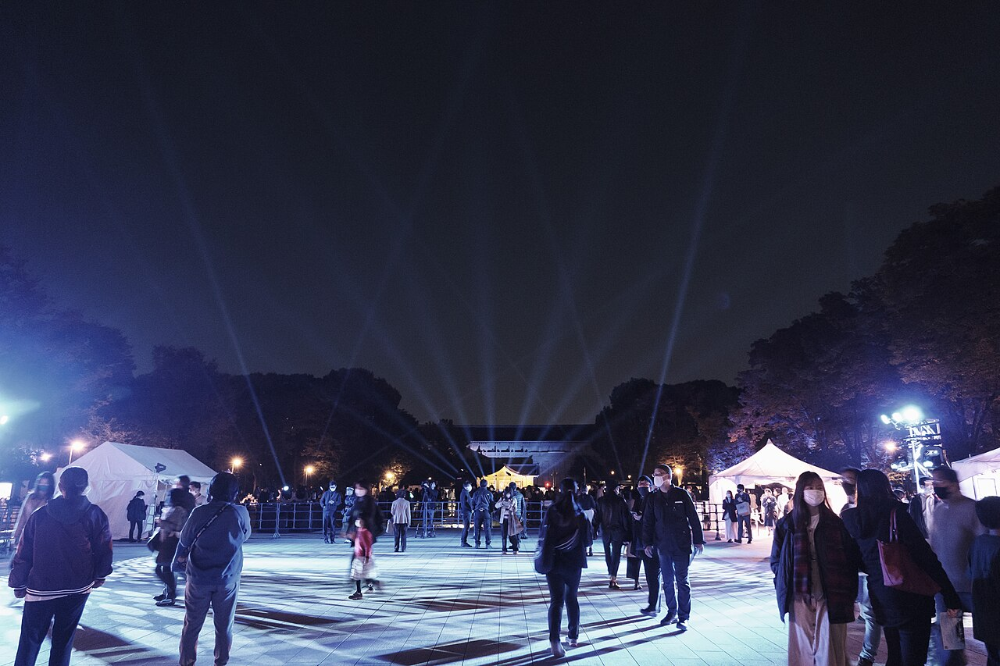
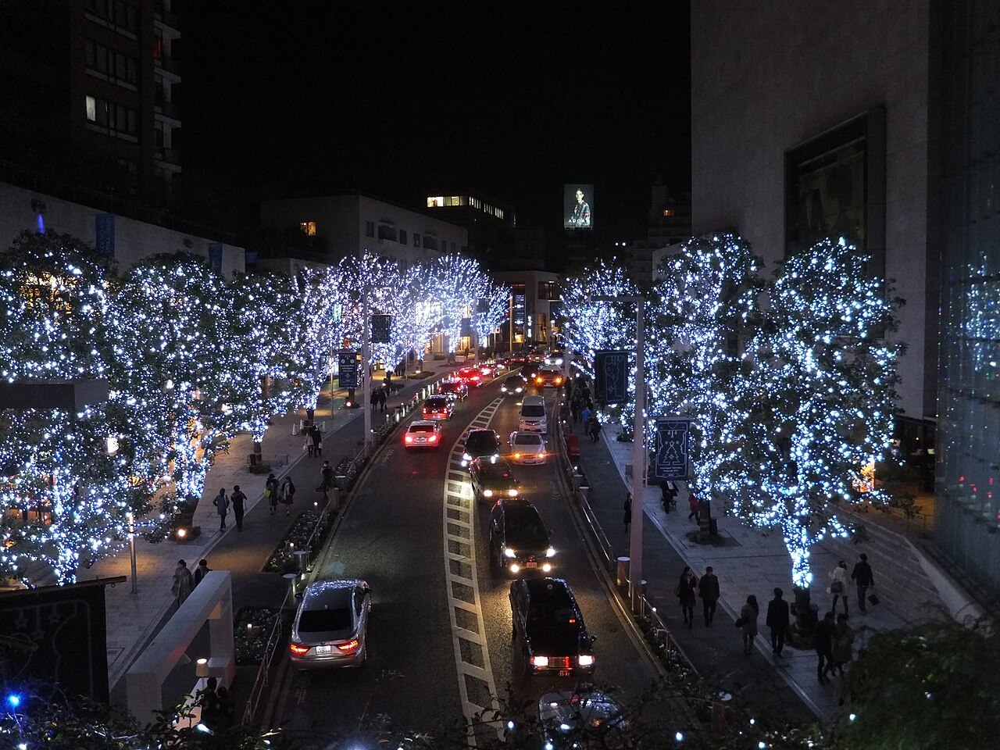
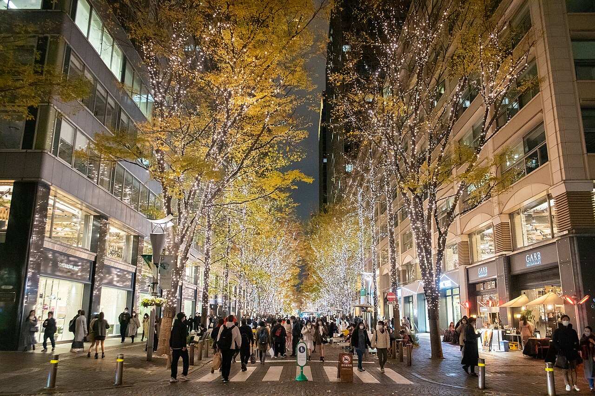

NARITA / 11.07夜空，留給花火活動照片請見主辦官網 ↗
11/7SAT / DAY 01
NARITA / FIREWORKS
落地之後，去看一場花火
先處理行李與實體票，時間允許才前往會場。
- 成田 T1・處理大箱與實體票14:00 當日配送截止；APA 代收與當日受理先確認
- 京成成田 → 會場接駁有排隊；步行備案留 50–60 分
- NARITA 花火散場後回成田站，目標 21:00 前搭車
條件成立才去開啟地圖路線


Tokyo, at ease.清澄庭園・河口湖紅葉
THIS TIME, WE SLOW DOWN.
東京 6 晚・街區、咖啡、小店
河口湖 1 晚・紅葉、溫泉、看山
行程採日本時間；班機另標兩地時間
01 Walk & wander
一天兩三個停點。
逛得開心，就在那裡多待一會。
全部 8 天 · 8 天
NARITA / FIREWORKS
先處理行李與實體票，時間允許才前往會場。
SHIMOKITAZAWA / SETAGAYA-DAITA
小店、發酵午餐、沿鐵道散步。一整天只留這一區。
吃：發酵デパートメント。雨備：縮短戶外，把時間留給咖啡與選物。
發酵デパートメント週日午餐點餐至 14:00，適合先吃。若想去 reload 的 OGAWA，它在下北澤東北側，可放在午餐前；不必為了喝兩次咖啡繞路。

NAKAMEGURO / DAIKANYAMA
中目黑河邊走走，再沿坡道散步到代官山。
吃：IVY PLACE 午餐；晚餐回新宿彈性選。雨備：把河邊散步換成書店與室內咖啡。
週一安排有正常營業資訊的店：ONIBUS 中目黑站前店、IVY PLACE 與代官山蔦屋。IVY PLACE 可用官網訂位；臨時公休仍看店家公告。明早去河口湖，今晚留時間整理行李。
KAWAGUCHIKO / MAPLE & ONSEN
先寄箱、看紅葉，再回旅館入住與泡湯。
KAWAGUCHIKO / BACK TO TOKYO
留一點湖邊的安靜，再帶著秋天回新宿。
吃：旅館早餐；湖邊定食；回新宿吃晚餐。雨備：咖啡、室內展館擇一，提早回車站。
纜車是選配，另 ¥1,200／人；排隊超過 30–45 分或強風就省略。14:30 前離開東岸，15:00 左右回 Royal 取箱，再預約 Taxi 到河口湖站。下午取箱不預設免費送站；飯店寄箱規則須確認。富士回遊現行平日時刻已核對，座位待訂。
KIYOSUMI-SHIRAKAWA / FUKAGAWA
清澄白河的咖啡與小店，接一頓深川的家常味。
吃：同區輕午餐、fukadaso 布丁、深川宿蛤蜊飯。雨備：咖啡、老倉庫選物，縮短街區步行。
11:30 先吃同區輕午餐，fukadaso 是下午茶。週四一般 13:00–18:00；深川宿平日有 17:00 晚餐時段。想早出門，可改去 iki Espresso 吃早午餐，不必兩家都吃。今天不再跨區去藏前。


SHINJUKU / COFFEE & GOODBYE
早餐留住宿附近，只逛一家，回程也從容。
東京這四天以巷弄、咖啡、吃飯為主。每張照片標實際場所；季節照片為過往實景，花況與山景看當天天氣。
02Eat well, take your time
一個街區，一頓喜歡的飯。
餐廳和下午茶接原行程，順路選就好。

每人金額是規劃預留，非店家即時菜單價；餐飲已算進預算篇，不另重複加總。候位超過 20–30 分可換同區店，河口湖的一晚晚餐與隔日早餐由二食方案處理。
03Little things to bring home
唱片、書、器皿，或一盒點心。
沿著每天的街區買，不另拉一條購物線。
A little room in your suitcase
整趟購物預留，依你想買的調整；未計入旅行基本概算。
六家是選項，不用逐家買滿。
LOFT 與 Hands 擇一；四歩吃飯和購物算同一站。
04What is on, while we are here
2026/11/7–11/14 期間活動。
主辦已公告；實際開催仍看當日天候。
花火與紅葉原本就有。上野、六本木、丸之內建議最多另選一晚，取代原本的晚間安排。

如果還有精神，去看一小段夜空的光。
下北澤提早收尾，19:15 左右到上野噴水前廣場。累了就省略。
11/8 觀賞在噴水前廣場，不是不忍池；11/7 19:30 才是不忍池場。下北澤→上野門到門估 50–65 分，先用餐、留人潮緩衝。看完回新宿估 40–55 分，會把慢遊日拉長至約 21:00 後回館；不再加其他夜景。風雨可能改時或取消。
無人機／燈飾免費；音樂節目另有付費場次

沿著藍白樹燈，散步一小段就好。
取代代官山後的自由晚餐安排，20:00 前回新宿；次晨要早起。
代官山經惠比壽到六本木門到門估 30–45 分，返回新宿另抓 30–40 分。不要再加鐵塔或展望台。66 Plaza 與毛利庭園 11/13 才啟動，11/9 不一起看；聖誕市集 11/21 才開始，本旅期看不到。
公共街道燈飾散步；餐飲、交通另計
白天看紅葉，能留到點燈再多留一會。
下午賞楓、16:30 左右離場，目標 17:15 前回館。先確認晚餐，不為等夜楓趕路。
Royal 在南岸，迴廊在北岸，門到門估 35–60 分，旺季可能更久。若想留到天黑，先取得旅館可供餐時間與回程 Taxi，不能把完整夜楓和早晚餐同時當保證。點燈至 21:00 不代表回程巴士也開到 21:00。
戶外賞楓；餐飲、交通另計

露台、暖光與一小段街頭音樂。
想慢一點，就用丸之內晚餐取代深川宿；不用兩邊都趕。
會場在 Marunouchi Terrace 前的仲通北側，不是任意東京站廣場。選音樂線時，16:30 左右離清澄白河，18:00 在丸之內用餐、18:45 到演出附近。若仍想吃 17:00 深川宿，僅在 18:00 左右吃完、交通順利時加排；門前仲町到會場估 25–40 分。累或下雨就回館，不追演出。
街區與音樂觀賞；餐飲、交通另計
05A gentler itinerary
東京四天的留白足夠。
花火日最趕，長途日先保留緩衝。
4 天街區散步，節奏舒服
3 天已調整，移動更順
1 天花火日偏趕，有條件保留
12:00 抵達後通關、寄箱、取票，再走去會場；散場後到新宿已近深夜。
這樣排：14:00 前先確認行李處理，15:00 仍沒箱子方案或實體票，就改赴新宿；當晚不再排餐廳。
前一晚晚睡，上午不再排早起景點；11:30 先吃午餐。
這樣排：唱片店 14:00 才開，下午順逛；世田谷代田留到最後，沒體力就直接回新宿。
咖啡、午餐、書店在相鄰街區，沒有橫跨東京。
這樣排：12:30 午餐先訂；吃完只留書店與巷弄。今晚早回新宿整理河口湖行李。
原本先入住，再趕迴廊和旅館晚餐，緩衝不足。
這樣排：改先寄箱、午餐、逛迴廊，再回旅館入住；16:30 左右離場。餐時未確認前，不硬等點燈。
09:30 到大石偏樂觀，旺季巴士與候位都可能吃掉時間。
這樣排：大石改 10:00 前後；纜車排隊超過 30–45 分就刪。14:30 離開東岸，先取箱，16:20 到站。
下午茶和 17:00 晚餐之間有餘裕，但原本缺午餐。
這樣排：11:30 吃同區輕午餐，13:00 咖啡，17:00 深川飯。不再跨去藏前或銀座。
茶、定食、小店已足夠；再加兩間大型雜貨店就太滿。
這樣排：四歩吃飯與選物一起完成。LOFT 與 Hands 選一家，逛累就直接回飯店。
12:30 巴士表定 14:25 到，距 20:20 起飛有 5 小時 55 分。
這樣排：主選 14:00→15:55；13:15 取箱、13:40 候車。只逛伊勢丹，路況不好用較早班或鐵路。
12:00 落地到 14:00 當日寄件截止只有兩小時。通關、APA 代收、實體票及晚間列車任一沒處理好，花火就保留為可放棄選項。臨時巴士有排隊，不代表可省掉所有步行。
先取得 Royal 入住前／退房後寄存與晚餐時段的確認。寄箱不可行，就改先入住、縮短賞楓；不預設現場一定有空置物櫃，也不帶大箱逛迴廊。
南岸旅館到北岸要交通。主線維持日景、16:30 左右離場；想等點燈，先談妥餐時與回程車。若一定要客房富士山景，Royal 現有快照尚未證實符合。
上野會晚歸；六本木隔天要早起；丸之內音樂若想從容，用丸之內晚餐取代深川宿。三個選配夜場最多挑一個，Design Festa 不塞回程日。
班機是原行程記錄；飯店是快照，均需對電子機票與訂單。14:00 巴士須先有位，16:00 班不作隨意替代。基本預算仍未含機票、購物、未揭露住宿稅費與可能的超額行李費。
交通表與活動資料查核：2026/10/23。以上是可執行條件的檢查，不把尚未完成的確認項目標成已解決。
這份是能慢逛的重遊行程，但 11/7 不能稱為輕鬆日。旅館寄箱、晚餐時段與指定席確定後，河口湖兩天才算真正排妥。
06 Getting around
大移動先訂位，市區用 IC 卡。
票價均為每位成人單程，另註者除外。
Taipei ↔ Tokyo Narita
同日抵達・依原時刻推算飛行約 3 小時 05 分
同日抵達・依原時刻推算飛行約 4 小時 05 分
班號與時刻來自原行程記錄，未取得官方指定日期確認結果，以電子機票與航空公司公告為準。上方各採機場當地時間，日本比台灣快 1 小時。長榮班機時刻查詢 ↗
京成本線到京成成田，再依當日巴士／步行引導到會場。
10/21 官方公告：JR 成田西口臨巴 14:30–18:00，運動公園→NTT 前 ¥250；回程由そよら成田ニュータウン發車、19:20 起 ¥170，末班未給明確時刻。另成田湯川／公津之杜→保健福祉館 14:00 起接駁 ¥300，回程 19:30 起。站點與實際乘車依主辦現場圖，不以接駁保證準點；步行備案估 50–60 分。佐川 T1 北翼 1F 當日件 14:00 截止與 APA 代收須確認，行李與實體票未解決就改新宿。
主辦最新接駁 ↗JR 成田 → 千葉 → 錦糸町 → 總武各停新宿。
返 JR 成田臨巴 19:20 起 ¥170，確切末班未公告；排隊長就按官方安全步行路線，步行估 60–90 分。精確 JR 車次、運價及末班接續仍待確認；入住可能 22–23 時，先通知飯店。11/7 N’EX 東京—新宿段施工停駛；改由機場直接去新宿可選機場巴士或 Skyliner 轉 JR，N’EX 須東京轉車。
JR 施工公告 ↗目標 07:30 前後早班；06:20 左右帶箱離開飯店。
歌舞伎町帶箱到 Busta 步行抓 20–25 分，再提早 20 分報到。確切班次與座位待訂，行李艙滿時可能無法承運，事先確認大箱件數與尺寸。到河口湖後用紅線／Taxi 接旅館與迴廊。
查班次／訂票 ↗16:48 出發 → 18:48 到新宿，全車指定席。
1 號站主選 14:00 出發 → 現行表定 15:55 抵達。
較保守選 12:30→14:25，但會在機場等較久。兩班都要訂位；別預設可臨時換車。每人行李艙最多 2 件，每件 50×60×120cm 內／30kg 內。20:20 航班，17:20 為最晚抵達目標；出發前若路況異常就提早改搭 N’EX 並現查接續。
官方時刻／訂票 ↗新宿 → 下北澤
世田谷代田 → 新宿
新宿 → 澀谷 → 中目黑
步行到代官山
新宿 → 森下，再散步
回程門前仲町搭地鐵
新宿 → 西荻窪 → 吉祥寺
西荻窪週五可搭快速
N’EX 當天不能直達新宿，須在東京轉車。花火後的晚間接續尚待確認，出發前先查一次。JR 官方公告 ↗
07 Spend on what you love
2 位成人、1 房的規劃試算。
金額可改，訂房後再更新一次。
Estimated / per person
每人概算・含 10% 餘裕
未含機票、購物與住宿尚未揭露的稅費。
APA 未稅快照＋Royal 二食快照為預設；
空房、房型與含稅結帳總價仍須確認。
請填匯率 0.1–0.5，以及房費 0–200,000。金額完整後重新試算。
| 項目 | 概算／台幣 |
|---|---|
| 小計 | |
| 另留 10% 餘裕 |
東京目標每房每晚 NT$3,500–5,000，六晚 NT$21,000–30,000。預設 NT$29,472 為 APA 兩段 Agoda 未稅快照（USD160×3＋USD147×3，USD1＝NT$32），不是已確認含稅成交價。若採 Booking 舊快照，六晚為 NT$39,842，可直接改上方房費試算。
Royal 一房含二食 ¥46,872 為既有查價快照；晚餐與早餐已從餐費扣除。配合美食篇，餐飲預留調為每人 ¥36,000，含咖啡與下午茶。交通含市區、長途與計程車分攤，為規劃估算。花火每人 ¥6,000＋手續暫列 ¥220；不去付費展望台。纜車選配另加 ¥1,200／人，其他臨時門票另計。
住宿稅費尚未完整揭露，10% 餘裕也不能視為稅費保證。精確房型、含稅總額與取消條件，以結帳頁為準。
08 A place to come back to
東京同一間住 3＋3 晚，
中間留一晚給河口湖的溫泉。
APA Hotel Shinjuku Kabukicho Chuo
NT$29,472 ／一房 6 晚・未稅快照
Royal Hotel Kawaguchiko
¥46,872 ／一房 2 人・二食快照
¥46,872 是 10/23 既有指定日期查價，含晚餐與早餐；未完整揭露房型與稅費。官網並非每間客房都有景觀，不能把湖畔位置視為客房山景保證。供餐時間隨季節變動，先確認再排夜楓。
迎接 15:00–18:00、送站 08:30–10:00，需先聯絡。下午取箱後另安排 Taxi；入住前／退房後寄大箱須確認。
勾選只記錄在這個瀏覽器，不代表完成預訂。
09Before we go
票、房與行李先確認。
分四次檢查，不必出門前一次想完。
勾選只是自己的檢查紀錄，不代表已代你訂房、買票或辦好入境手續。
Book & confirm
Prepare & pack
VJW 是入境及海關申報服務，不是簽證，未使用者可依現場紙本流程。長榮 2026 行動電源規則：不得託運、不得放上方置物箱，機上禁止使用或替它充電；>100–160Wh 需事先核准，>160Wh 不可。個別保護、容量標示清楚。液體按容器容量判斷；必要液態藥品另向安檢出示。
Ready to leave
Bring it all home
14:00 巴士現行表定 15:55 到 T1，距原行程 20:20 起飛有 4 小時 25 分；道路異常要在出發前及早改鐵路，不保證巴士準點。長榮成田人工櫃台一般起飛前 2.5 小時開放，提早到不等於能立刻託運，當日受理看現場。含肉伴手禮不以日本購入或真空包裝判斷可攜，先查官方、必要時申報。
勾選保存在這個瀏覽器；換裝置或清除資料可能不保留。護照、行李規則請依自己的票券與資格核對。
整理與查核日：2026/10/23。車次為官方現行表，非指定日期座位保證。店家營業與活動可能臨時調整，出發前看官方公告。
原機票資料：11/14 BR195 成田 T1 20:20 → 桃園 T2，時間以機票與航空公司當日公告為準。
本頁使用可公開分享的 CC 授權照片，皆為過往實景，依版面顯示裁切。同區街景不代表店內或餐點；官方照片以連結提供。照片的著作權與個別授權仍歸原作者。